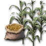
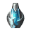
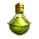
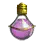
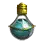

+
Oil of Corruption
🔗
+
Fruit of the Sun
1
🔗
+
How to Get
+
Farming
🔗
 Corn
Paprika
Tomato
Wheat
+
Gathering
🔗
Wild Herb
- Hoe Gather at Behr
+
Used In Recipe
+
Alchemy
🔗
Clown's Blood
1
Defense Elixir
3
Dragon's Tears
50
Elixir of Concentration
1
Elixir of Draining
3
Elixir of Death
6
 Elixir of Deep Sea
5
 Elixir of Destruction
5
Elixir of Frenzy
5
Elixir of Mentality
1
Elixir of Perforation
4
Elixir of Persistence
5
 Golden Hand Elixir
4
Imperfect Alchemy Stone of Destruction
10
Leather Glaze
1
Metal Solvent
1
Perfume of Courage
2
Perfume of Swiftness
2
Purified Lightstone of Fire
50
Purified Lightstone of Wind
50
Refined Delotia Reagent
1
 Resurrection Elixir
1
Sinner's Blood
1
Whale Tendon Elixir
2
Wise Man's Blood
1
+
Processing
🔗
+
Heating
Fine Black Stone Powder
1
Impeccably Polished Stone
1
And More...
+
Notes
- Hoe Gather at Behr for Weeds/Wild Grass.